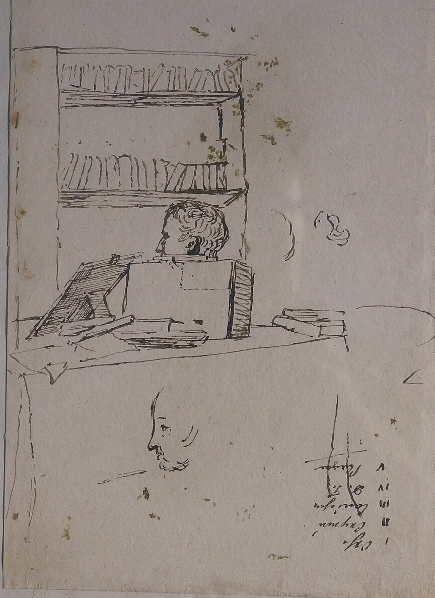
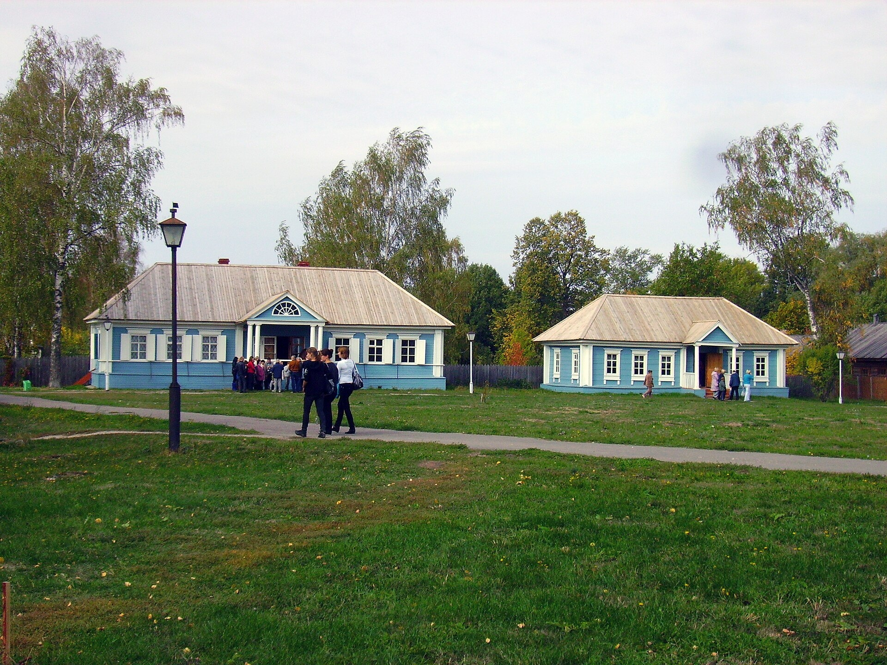
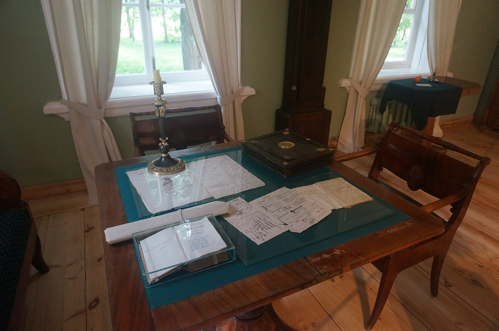
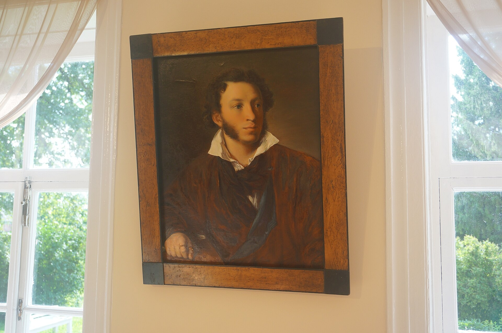
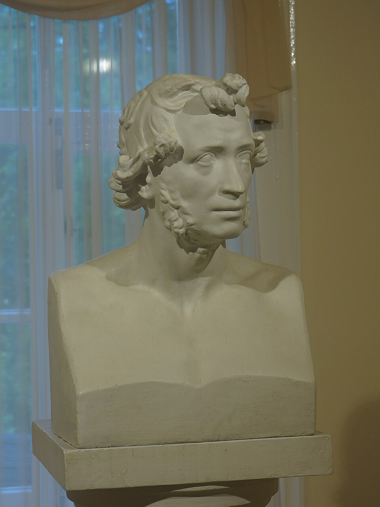
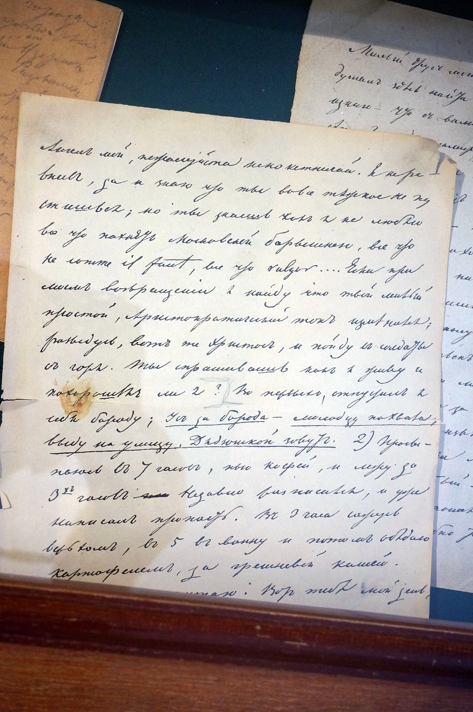
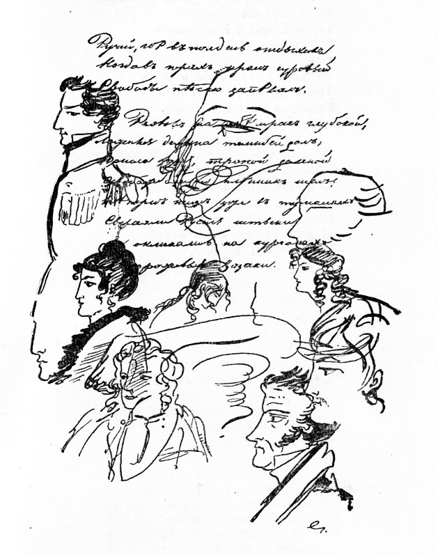
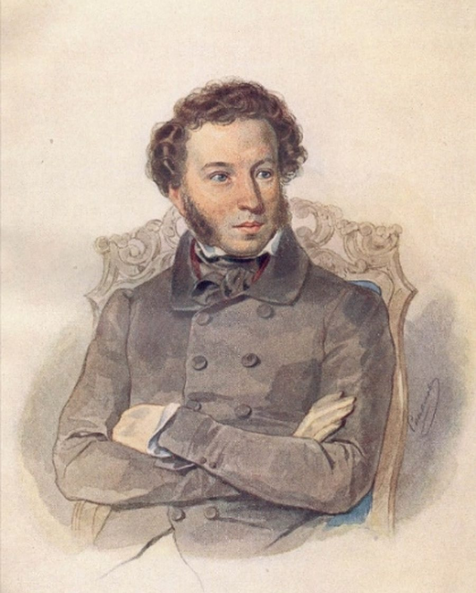

Болдинская
сентябрь — декабрь 1830
Александр Сергеевич Пушкин · 1799–1837
→ листать
Три месяца, которые стали эпохой
Болдинской осенью называют период, который Пушкин провёл в своём родовом имении Болдино осенью 1830 года. Из-за эпидемии холеры он оказался заперт в деревне почти на три месяца — и за это время написал столько, сколько иной автор не напишет за десятилетие.
Приезд и ожидание
Пушкин едет в Болдино, чтобы решить дела с имением и подготовиться к свадьбе. Ждал задержаться на пару недель.
Пик работы
Карантин отрезает его от Москвы — и Пушкин «запирается» в работе: с середины октября заканчивает одно произведение за другим.
Возвращение
Лишь с третьей попытки он вырывается из Болдина, оставив позади главный творческий рывок жизни.

Две причины: невеста и имение
Весной 1829 года Пушкин сделал предложение Наталье Гончаровой. Свадьбу дважды откладывали: сначала из-за матери невесты, потом из-за денег. К осени 1830 года дело наконец сдвинулось с места.
Свадьба
Перед венчанием нужно было устроить деньги: приданое, обустройство в Москве.
Болдино
В августе 1830 года умер дядя Василий Львович. Имение Большое Болдино Пушкин получил в наследство.
Приказ отца
Отец отдал Болдино ему при условии, что он сам съездит и оформит бумаги. Поехал он один.
В дорогу Пушкин отправился 31 августа 1830 года, в письме звал невесту «моим ангелом».
Карантин закрыл все дороги
В сентябре 1830 года в Поволжье и Москве вспыхнула холера. Дороги перекрыли военными кордонами, на выездах дежурили карантины. Пушкин трижды пытался уехать к невесте — и трижды его возвращали. В Москву он попал только к началу декабря.
Инструменты поэта
Ни кабинета, ни библиотеки в Болдине не было. Пушкин писал за простым столом, при свече, как было во времена его молодости — «дома» Болдино стало на эти месяцы почти тайным убежищем.
Бумага и перо. Черновики с рисунками на полях: страница переживала десятки правок.
Письмо друзьям. Он «потребовал» от Петра Вяземского и Петра Плетнёва прислать ему книги и письма из Петербурга.
Сказки и народный язык. Арина Родионовна умерла в 1828-м, но сюжеты, услышанные от неё, вернулись в Болдине.
Письма. Пушкин просит друзей присылать книги: без книг под рукой ему приходилось работать по памяти.

Стол поэта · музей в БолдинеЧто у тебя делается в Москве?
В руках этой холеры, и мне нелегко
с каждым днём ждать тебя, как с любовником.
Переписка с невестой шла месяцами: письма проходили через карантинные пункты и терялись. Один только октябрь дал Пушкину десятки стихотворений — так работает «заточение».
Три месяца — по дням
в Болдино
в имение
«Онегин», «Повести»
и «Трагедии»
в Москву
7–14 сентября
Первые стихи Болдина: «Бесы», «Элегия».
23–24 октября
Два самых насыщенных дня: завершение «Онегина».
ноябрь
Четыре «Маленькие трагедии» и сказки.
«Евгений Онегин» завершён в Болдине
Роман Пушкин писал почти восемь лет — с 1823 года. Болдинская осень стала финишем: здесь он закончил восьмую главу и написал «Путешествие Онегина».
Именно в Болдине появился последний — самый пронзительный — монолог Татьяны: «А счастье было так возможно, так близко!..»
«Блажен, кто праздник жизни рано
Оставил, не допив до дна…»Пушкин, «Евгений Онегин» — строки, записанные в Болдине

Пять повестей за два месяца
«Повести покойного Ивана Петровича Белкина» — прозаический дебют Пушкина. Пять повестей под одной обложкой, от лица скромного помещика Белкина.
«Болдинский» сюжет — насмешка над литературным «я»: Пушкин прячется за чужим именем.
Провинциальная Россия
Помещики, станции, смотрители — русская жизнь без «испанского плаща».
Рассказчик
Каждую историю в книге рассказывает свой человек.
Начало русской прозы
Из этих пяти повестей выросла вся русская повесть XIX века.

Четыре «Маленькие трагедии»
«Пир во время чумы»
В ноябре Пушкин пишет четыре короткие пьесы о страстях и власти над человеком. Самая болдинская по духу — «Пир во время чумы»: люди пируют, пока снаружи идёт холера.
Гимн чуме и страх
Перевод с английского — из поэмы Джона Вильсона «Чумной город». Пушкин забирает сюжет и делает из него пьесу о предельном моменте жизни: когда у смерти нет расписания, остаётся только быть живым сейчас.
Есть упоение в бою,
И бездны мрачной на краю,
И в разъяренном океане,
Средь грозных волн и бурной тьмы,
И в аравийском урагане,
И в дуновении Чумы.Председатель · «Пир во время чумы», ноябрь 1830

Рукопись в музее Болдина: строки, переписанные набело.
«Сказка о попе и о работнике его Балде»
В Болдине Пушкин написал первую свою сказку в народном духе — о жадном попе и находчивом работнике Балде. Написана она была на языке почти до скандала народном: сказку так и не напечатали при жизни поэта.
Этот приём — просторечие, присказка, ритм народного стиха — станет главным и для сказок 1831–1834 годов: о Салтане, о рыбаке и рыбке, о мёртвой царевне.

«Болдинская осень» повторилась ещё дважды
Пушкин возвращался в Болдино ещё два раза — и оба раза осенью, и оба раза работал с той же силой. Поэтому «Болдинскими» называют три осени.
1833 — «Медный всадник», «История Пугачёва».
1834 — «Сказка о золотом петушке».
Первая и главная
«Евгений Онегин», «Повести Белкина», «Маленькие трагедии», сказка о Балде.
Вторая
«Медный всадник», «Пиковая дама», «Анджело» — и начало «Истории Пугачёва».
Третья
«Сказка о золотом петушке» и другие поздние стихи.
Болдино — музей-заповедник
В селе Большое Болдино стоит усадьба Пушкиных с восстановленным домом, кабинетом и экспозицией рукописей. Каждую осень здесь проходит фестиваль «Болдинская осень» — чтят тот самый месяц.

Болдинскаяосень
Влад Всемогущий
Пушкин · Болдинская осень · 1830
Конец → первый слайд